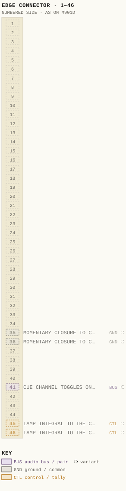
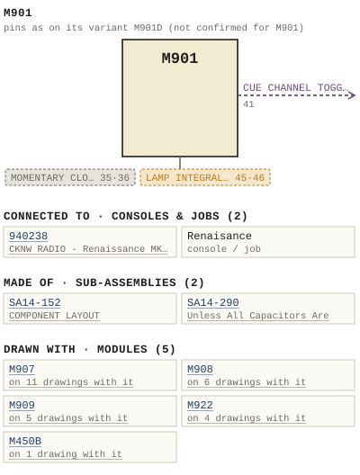

M901
| Type | module |
| Category | UNSORTED |
| Try it | simulator & front panel · download package (zip) |
| Earliest dated evidence | 1994|27 — used in a dated job |
| Evidence | job 940238 |
| Confidence | low (in use by) |
| All years found | 1994|27, 1995|28, 1996|29 |
| Used in jobs | 940238 (1994|27), Renaisance |
| Variants | M901A, M901B, M901BY, M901C, M901CY, M901D, M901NW |
| Folder | Consoles/1990-1999/940448 |
| Folder | DOCUMENTS/RECENT SCANS/WBSps.ca 20210319 - Redone of what Sampson scanned |
| Folder | DOCUMENTS/RECENT SCANS/XXX - was re-scanned - WBPS Scans - SAMPSON - 2319.2KG -20210301T215225Z-001 |
Connections
What it is made of and what it is part of.
Pictures


M901.pinout.svg

M901.connections.svg 1994 - 940448 - DOC - 940448-04-002 - ODULES ARE WIRED BUT NOT SUPPLIIED INITIALLY FUTURE.jpg
1994 - 940448 - DOC - 940448-04-002 - ODULES ARE WIRED BUT NOT SUPPLIIED INITIALLY FUTURE.jpg 19xx - DOC - 901-03-011 - SQES TDURCE FICTS.jpg
19xx - DOC - 901-03-011 - SQES TDURCE FICTS.jpg 19xx - DOC - 901-03-012 - SAND AND CLEAN REMOVE ALL BURRS AND SHARP.jpg
19xx - DOC - 901-03-012 - SAND AND CLEAN REMOVE ALL BURRS AND SHARP.jpg 19xx - 901-03-012 - M450B MOUNTING BRACKET FOR M901 TEST JIG - DRN PAS - ENG PAS - ISS 1.jpg
19xx - 901-03-012 - M450B MOUNTING BRACKET FOR M901 TEST JIG - DRN PAS - ENG PAS - ISS 1.jpg 1994 - 940238-03-011 - M901NX MIC INPUT MODULE - DRN DRG - ISS 1.jpg
1994 - 940238-03-011 - M901NX MIC INPUT MODULE - DRN DRG - ISS 1.jpg 19xx - DOC - WBSps.ca 20210319.jpg
19xx - DOC - WBSps.ca 20210319.jpg 19xx - D 901BX01 - M901BX MIC INPUT MODULE - ISS 1.jpg
19xx - D 901BX01 - M901BX MIC INPUT MODULE - ISS 1.jpg 19xx - D 901CX01 - M901CX LINE INPUT MODULE - ISS 1.jpg
19xx - D 901CX01 - M901CX LINE INPUT MODULE - ISS 1.jpg 1994 - 940238 - DOC - 2021-3-16-21-57-4.jpg
1994 - 940238 - DOC - 2021-3-16-21-57-4.jpg 1996 - 960243 - DOC - 2021-3-17-0-1-35.jpg
1996 - 960243 - DOC - 2021-3-17-0-1-35.jpgPinout & connections
No page of its own numbers M901's contacts: these are its variant M901D's, drawn faded — not confirmed for M901.
pinout (SVG) · connections (SVG) · pins (JSON)
Pin evidence — 5 contacts
| Pin | Signal | Kind | Confidence | Read from | Source |
|---|---|---|---|---|---|
| 35 | MOMENTARY CLOSURE TO CONTROL COMMON VIA AN | ground / common | variant | prose | 1995 - M901D - 901-01-006 - COMPONENT LAYOUT.…, p. 1 “A momentary closure to control common via an open collector transistor which follows source selection is available at module connector P2 p…” |
| 36 | MOMENTARY CLOSURE TO CONTROL COMMON VIA AN | ground / common | variant | prose | 1995 - M901D - 901-01-006 - COMPONENT LAYOUT.…, p. 1 “A momentary closure to control common via an open collector transistor which follows source selection is available at module connector P2 p…” |
| 41 | CUE CHANNEL TOGGLES ON AND OFF | audio bus / pair | variant | prose | 1995 - M901D - 901-01-006 - COMPONENT LAYOUT.…, p. 1 “This alternate action can be invoked by either momentarily closing Cue switch SW1 (Q), or momentarily grounding the external Cue control in…” |
| 45 | LAMP INTEGRAL TO THE CHANNEL OFF SWITCH | control / tally | variant | prose | 1995 - M901D - 901-01-006 - COMPONENT LAYOUT.…, p. 1 “The lamp integral to the Channel Off switch is uncommitted and available at module connector P2 pins 45 and 46.” |
| 46 | LAMP INTEGRAL TO THE CHANNEL OFF SWITCH | control / tally | variant | prose | 1995 - M901D - 901-01-006 - COMPONENT LAYOUT.…, p. 1 “The lamp integral to the Channel Off switch is uncommitted and available at module connector P2 pins 45 and 46.” |
Dates found in the documents
| Year | Kind | Text | File |
|---|---|---|---|
| 1995|28 | manual issue date | Issue #2 September 5, 1995 |
1995 - DOC - 14-152-02-003 - COMPONENT LAYOUT.wp |
| 1995|28 | manual issue date | Issue #2 September 5, 1995 |
1995 - M922 - DOC - 14-152-02-003 - COMPONENT LAYOUT.wp |
| 1995|28 | manual issue date | Issue #2 September 5, 1995 |
1995 - M901 - DOC - 14-152-02-003 - COMPONENT LAYOUT.wp |
Documents (7)
Photos & scans (10)


Sub-assemblies & parts used (2)
| Item | What | Family | Year | How we know |
|---|---|---|---|---|
| SA14-152 | COMPONENT LAYOUT | Circuit boards (SA14-nnn) | drawing filed with it | |
| SA14-290 | Unless All Capacitors Are | Circuit boards (SA14-nnn) | named in its manual |
Consoles & jobs it is connected to (2)
Their own drawings name this module.
| Job | Year | Drawing | Page |
|---|---|---|---|
| 940238 | 1994|27 | 1994 - 940238-03-011 - M901NX MIC INPUT MODULE - DRN DRG - ISS 1.jpg | 1 |
| Renaisance | 1994 - Renaisance - MKI.pdf | 5 |
Named in other drawings & documents (16)


From the manuals
Each manual split into its sections. Text that is the same in many Ward-Beck manuals (warranty, address, standard notes) is kept once on the Boilerplate page and linked.
General description (2)
Description — 2451 words · 19xx - M901 - DOC - 909-01-001 - COMPONENT LAYOUT.wp, page 1
M909 METER/MIX MINUS MODULE
Please refer to module layout drawing A 909-04-002.
1) Legend Strips
Two plastic covered designation strips for identification of the selector functions for the mono and stereo meter selectors.
2) Mono Meter Selector
Momentary switches SW7 through SW12 control the active solid-state switches for source selection to the mono meter. 3) Auxiliary Stereo Selector
Momentary switches SW1 through SW6 control the active solid-state switches for source selection to the left and right auxiliary meters. Meter Amplifiers
Main Meter Amplifier
Two identical meter amplifiers are employed for the main metering in the console. They consist of U28 and U29 and associated components for the left and right meters.
Dual operational amplifier U28 forms the nucleus of a balanced input/balanced output variable sensitivity buffer. Capacitors C74 and C75 prevent external bias from disturbing the meter circuit, while C82 and C83 protect the meter from any offset error present in U28. Trim control R129 is normally factory set to provide a 0 VU indication on the console meters at the specified system levels. Resistor R135 ensures the output impedance of the meter amplifier matches the VU standard (ANSI C16.5-1954).
Mono and Auxiliary Meter Selectors
The mono and auxiliary meters have six input sources, of which only one may be selected at a time. Referring to the schematic on sheet B909-02-002/2, each input is AC coupled to a separate 74HC4053 solid state switch. The outputs of the switches for the mono meter are all connected to the balanced summing amplifier U13. R46, R48 and R52 make up the `T' feedback for U13A with potentiometer R52 providing the gain adjustment for the mono meter output.
The left and right haves of the auxiliary stereo meter selector are identical to the mono meter selector.
Meter Select Logic
Refer to the schematic on sheet B909-02-002/1. The 74HC4053 switches are controlled by logic chips U1 through U6. Since both the mono and auxiliary stereo logic circuits are identical, only the mono meter selector will be described.
Microcontroller U1 reads the switches SW7 through SW12, which are software debounced, and outputs a 3 bit binary code for the depressed switch with the highest precedence.
The clock rate for U1 is set by the RC time constant of R11 and C7. U1 also requires a power on reset signal and this is provided by R17 and C5.
The tally LEDs for switches SW7 through SW12 are controlled by U4, a CD4051 8 channel analog multiplexer. The three bit binary code from U1 determines which channel of U4 is turned "ON". Current flows through current limiting resistor R19 and through the "ON" channel of U4 to the appropriate LED.
Grounding the control line on pins 9, 10 & 11 of the 74HC4053 will connect the associated input to the summing amplifier. The 8 channel analog multiplexer U3 operates in manner similar to U4 except that the "ON" channel of U3 grounds one of the control lines to the 74HC4053 switches. The remaining control lines are pulled up by R18, which turns off the remaining 74HC4053 switches for the mono selector. Mix Minus
Refer to the schematic on sheet B909-02-002/3.
The mix minus portion of the M909 consists of U30 through U34 and associated components. The telephone input is configured as a simple differential input amplifier whose signal is summed with all four mix minus outputs. The mix minus inputs are configured so that the like numbered output does not receive the associated input.
Each mix minus output is electronically balanced for direct coupling to a bridging output load. Power Supply Decoupling
The active decoupling network consisting of Q1 through Q5 and associated components regulates the incoming power for use in the module. Diodes CR1 and CR2 prevent module damage in the event of power supply voltage reversal. The decoupling network drops the ±23 volts down to a nominal ±18 volts. Transistor Q3 further decouples the ±18 volts down to +5 volts for use by the CMOS logic circuitry.
C1 Capacitor 22 uF/25 V Siemens 85200 C2 " 22 uF/25 V " " C3 " 22 uF/25 V " " C4 " 22 uF/25 V " " C5 " 22 uF/25 V " "
C6 " 0.1 uF/100 V Sprague K104K20X7RFVBWN C7 " 330 pF Philips 638-03331 C8 " 0.1 uF/100 V Sprague K104K20X7RFVBWN C9 " 330 pF Philips 638-03331 C10 To C21 " 6.8 uF/16 V ITT 6.8M16
C22 " 220 uF/10 V " 220M010 C23 " 220 uF/10V " " C24 " 47 pF Philips 638-34479 C25 " 47 pF " " C26 " 22 uF/35 V ITT 22M35
C27 To C38 " 6.8 uF/16 V ITT 6.8M16 C39 " 220 uF/10 V " 220M010 C40 " 220 uF/10V " " C41 " 47 pF Philips 638-34479 C42 " 47 pF " "
C43 " 22 uF/35 V ITT 22M35 C44 To C55 " 6.8 uF/16 V ITT 6.8M16 C56 " 220 uF/10 V " 220M010 C57 " 220 uF/10V " " C58 " 47 pF Philips 638-34479
C59 " 47 pF " " C60 " 22 uF/35 V ITT 22M35 C61 To C73 " 0.1 uF/100 V Sprague K104K20X7RFVBWN C74 " 6.8 uF/16 V ITT 6.8M16 C75 " 6.8 uF/16 V " "
C76 " SOT C77 " SOT C78 " 0.1 uF/100 V Sprague K104K20X7RFVBWN C79 " 0.1 uF/100 V " " C80 " 47 pF Philips 638-34479
C81 " 47 pF " " C82 " 10 uF/25 V ITT 10M25 C83 " 10 uF/25 V " " C84 " 6.8 uF/16 V ITT 6.8M16 C85 " 6.8 uF/16 V " "
C86 Capacitor SOT C87 " SOT C88 " 0.1 uF/100 V Sprague K104K20X7RFVBWN C89 " 0.1 uF/100 V C90 " 47 pF Philips 638-34479
C91 " 47 pF " " C92 " 10 uF/25 V ITT 10M25 C93 " 10 uF/25 V " " C94 " 10 uF/25 V " " C95 " 10 uF/25 V " "
C96 " 0.1 uF/100 V Sprague K104K20X7RFVBWN C97 " 0.1 uF/100 V C98 " 82 pF Philips 638-58829 C99 " 22 pF " 638-10229 C100 " 33 uF/16 V ITT 33M16
C101 " 10 uF/25 V " 10M25 C102 " 0.1 uF/100 V Sprague K104K20X7RFVBWN C103 " 0.1 uF/100 V " " C104 " 82 pF Philips 638-58829 C105 " 10 uF/25 V ITT 10M25
C106 " 82 pF Philips 638-58829 C107 " 10 uF/25 V ITT 10M25 C108 " 0.1 uF/100 V Sprague K104K20X7RFVBWN C109 " 0.1 uF/100 V " " C110 " 82 pF Philips 638-58829
C111 " 10 uF/25 V ITT 10M25 C112 " 82 pF Philips 638-58829 C113
- source: 19xx - M901 - DOC - 909-01-001 - COMPONENT LAYOUT.wp, p. 1
Description — 1768 words · 1995 - M901 - DOC - 14-152-02-003 - COMPONENT LAYOUT.wp, page 1
M922/M922A EQUALIZER MODULES
Refer to Module Layout A 922-04-001
1) High Pass Filter Insert Switch
Switch SW2 inserts the high-pass filter into the signal path. The tally lamp integral to the pushbutton indicates when the filter is in circuit.
2) High Frequency
Control R6 sets the corner frequency for the shelving equalizer characteristic of the high frequency equalizing section. This control adjusts the filter network from 1800 Hz to 15000 Hz; simultaneously for the left and right channels of the M922.
3) High Frequency Boost/Cut
Resistor R3 and its appropriate sections determine the amount of high frequency shelving applied to the audio signal. The control range is from +15 dB to -15 dB.
4) Mid-Frequency
Control R5 sets the Mid-Frequency between 400 Hz and 6.4 kHz. Both the left and right channels of the M922 are controlled simultaneously.
5) Mid-Frequency Cut/Boost
Resistor R1 sets the amount of presence cut or boost applied to the audio signal.
6) Low Frequency
Low Frequency control R4 sets the corner frequency of the shelving equalizer characteristic. In the case of the M922, both left and right channels are simultaneously adjusted from 50 Hz to 200 Hz.
7) Low Frequency Cut/Boost.
R2 controls the amount of cut or boost that is applied in the low frequency spectrum. The full range of this control is ±15 dB.
8) Equalizer Insert Switch
Alternate action switch SW1 inserts the equalizer circuitry in the signal path. An integral tally lamp indicates that the equalization process is taking place. C1 Capacitor 10 uF/25 V ITT 10M25 C2 " 10 uF/25 V " " C3 " 150 pF Philips 638-70151 C4 " 22 pF " 638-10229 C5 " 0.068 uF/100 V Aselco CQ92-MC-100-802M
C6 " 0.068 uF/100 V " " C7 " 0.068 uF/100 V " " C8 " 10 uF/25 V ITT 10M25 C9 " 10 uF/25 V " " C10 " 0.1 uF/100 V Sprague K104K20X7RFVBWN
C11 " 68 uF/10 V ITT 68M10 C12 " 68 uF/10 V " " C13 " 100 pF Philips 638-58101 C14 " 150 pF " 638-70151 C15 " 68 uF/10 V ITT 68M10
C16 " 100 pF Philips 638-58101 C17 " 68 pF " 638-52689 C18 " 68 uF/10 V ITT 68M10 C19 " 100 pF Philips 638-58101 C20 " 68 pF " 638-52689
C21 " 150 uF/10 V ITT 150M10 C22 " 100 pF Philips 638-58101 C23 " 100 pF " " C24 " 68 uF/10 V ITT 68M10 C25 " 10 uF/25 V " 10M25
C26 " 100 pF Philips 638-58101 C27 " 10 uF/25 V ITT 10M25 C28 " 10 uF/25 V " " C29 " 10 uF/25 V " " C30 " 0.1 uF/100 V Sprague K104K20X7RFVBWN
C31 " 68 uF/10 V ITT 68M10 C32 " 68 uF/10 V " " C33 " 68 uF/10 V " " C34 " 22 pF Philips 638-10229 C35 " 0.1 uF/100 V Sprague K104K20X7RFVBWN
C36 " 0.1 uF/100 V " " C37 " 22 pF Philips 638-10229 C38 * " 10 uF/25 V ITT 10M25 C39 " 10 uF/25 V " " C40 " 150 pF Philips 638-70151
C41 Capacitor 22 pF Philips 638-10229 C42 " 0.068 uF/100 V Aselco CQ92-MC-100-802M C43 " 0.068 uF/100 V " " C44 " 0.068 uF/100 V " " C45 " 10 uF/25 V ITT 10M25
C46 " 10 uF/25 V " " C47 " 0.1 uF/100 V Sprague K104K20X7RFVBWN C48 " 68 uF/10 V ITT 68M10 C49 " 68 uF/10 V " " C50 " 100 pF Philips 638-58101
C51 " 150 pF " 638-70151 C52 " 68 uF/10 V ITT 68M10 C53 " 100 pF Philips 638-58101 C54 " 68 pF " 638-52689 C55 " 68 uF/10 V ITT 68M10
C56 " 100 pF Philips 638-58101 C57 " 68 pF " 638-52689 C58 " 150 uF/10 V ITT 150M10 C59 " 100 pF Philips 638-58101 C60 " 100 pF " "
C61 " 68 uF/10 V ITT 68M10 C62 " 10 uF/25 V " 10M25 C63 " 100 pF Philips 638-58101 C64 " 10 uF/25 V ITT 10M25 C65 " 10 uF/25 V " "
C66 " 10 uF/25 V " " C67 " 0.1 uF/100 V Sprague K104K20X7RFVBWN C68 " 68 uF/10 V ITT 68M10 C69 " 68 uF/10 V " " C70 " 68 uF/10 V " "
C71 " 22 pF Philips 638-10229 C72 " 0.1 uF/100 V Sprague K104K20X7RFVBWN C73 " 0.1 uF/100 V " " C74 " 22 pF Philips 638-10229 C75 " 22 uF/25 V " 03016229
C76 " 22 uF/25 V " " C77 " 22 uF/25 V " " C78 " 22 uF/25 V " " C79 " 22 uF/25 V " " C80 " 22 uF/25 V " "
C81 Capacitor 22 uF/25 V Philips 03016229 C82 " 0.1 uF/100 V Sprague K104K20X7RFVBWN C83 " 22 uF/25 V Philips 03016229 C84 " 0.1 uF/100 V Sprague K104K20X7RFVBWN C85 " 22 uF/25 V Philips 03016229
C86 " 0.1 uF/100 V Sprague K104K20X7RFVBWN C87 " 22 uF/25 V Philips 03016229 C88 " 0.1 uF/100 V Sprague K104K20X7RFVBWN C89 " 22 uF/25 V Philips 03016229 C90 " 22 uF/25 V " "
C91 " 0.1 uF/100 V Sprague K104K20X7RFVBWN C92 " 0.1 uF/100 V " " C93 " 0.1 uF/100 V " " C94 * " 0.1 uF/100 V " " C95 * " 0.1 uF/100 V " "
CR1 to CR5 Diode Motorola 1N4003 CR6 " National 1N4148 CR7 " " " CR8, CR9 " Motorola 1N4003
DS1 LED Yellow H.P. HLMP 1401 DS2 " " "
J1 Connector, 20 Pin Socket Berg 65780-020 J2 " 20 Pin Socket " " J3 " 6 Pin Socket " 65780-006
Q1 Transistor National 2N6731 Q2 " " 2N3904 Q3 " " 2N3906 Q4 " " 2N6730 Q5 " " 2N3904
Q6 " " " Q7 " " 2N3906 Q8 " " 2N3904
R1 Potentiometer 5K Clarostat 10-055 R2 " 5K " " R3 " 5K " " R4 " 50K " 10-053 R5 " 50K " 10-057
R6 Potentiometer 50K " 10-053 R7 Resistor 1/4W 5% 15K Philips CR25 R8 " " 15K " " R9 " " 15K " " R10 " " 15K " "
R11 Resistor 1/4W 5% 220 Philips CR25 R12 " " 15K " " R13 " " 15K " " R14 " " 100K " " R15 " " 56K " "
R16 " " 82K " " R17 " " 36K " " R18 " " 100K " " R19 " " 15K " " R20 " " 15K " "
R21 " " 15K " " R22 " " 15K " " R23 " " 220 " " R24 " " 15K " " R25 " " 15K " "
R26 " " 5K6 " " R27 " " 220 " " R28 " " 15K " " R29 " " 15K " " R30 " " 220 " "
R31 " " 15K " " R32 " " 2K7 " " R33 " " 100 " " R34 " " 15K " " R35 " " 15K " "
R36 " " 220 " " R37 " " 2K7 " " R38 " " 15K " " R39 " " 220 " " R40 " " 10K " "
R41 " " 220K " " R42 " " 22K " " R43 " " 15K " " R44 " " 15K " " R45 " " 15K " " R46 Resistor 1/4W 5% 100K Philips CR25 R47 " " 100K " " R48 " " 100K " " R49 " " 100K " " R50 " " 15K " "
R51 "
- source: 1995 - M901 - DOC - 14-152-02-003 - COMPONENT LAYOUT.wp, p. 1
Specifications (2)
Technical Data — 1148 words · 1995 - M901 - DOC - 14-152-02-003 - COMPONENT LAYOUT.wp, page 1
M922/M922A EQUALIZER MODULES
Gain: Unity, ±0.5 dB.
Frequency Response: ±0.5 dB from 20 Hz to 20 kHz with the equalizer inserted, high pass filter disabled, and the cut and boost controls in their centre detent position.
Noise: -90 dBm absolute (20 Hz to 20 kHz), equalizer cut/boost controls in their centre detent position.
Total Harmonic Distortion: Less than 0.25% from 20 Hz to 20 kHz at +20 dBu output or less. Less than 0.01% at 1 kHz at +20 dBu output level.
Source Impedance: 300 ohms or less, unbalanced. 600 ohms or less, balanced.
Input Impedance: Greater than 10K ohms unbalanced; 20K ohms balanced.
Input Level: -6 dBu nominal, +20 dBu maximum.
Output Impedance: 30 ohms or less unbalanced.
Load Impedance: 5K ohms or greater.
Output Level: -6 dBu nominal, +21 dBu maximum.
Channel Separation: Greater than -80 dB 20 Hz to 20 kHz.
Phasing: Input and Output are in phase with the equalizing controls in the centre detent position.
Equalization Tracking: Within 1 dB.
Power Requirements: ±23 volts DC (M922 120 mA), (M922A 65 mA).
Ambient Temperature: 0 to 50 degrees Celsius.
Dimensions: 1.5" wide x 8" high x 6.6" deep. (38mm x 203mm x 168mm).
Weight: M922 14 ounces, (400 grams). M922A 14 ounces, (400 grams). GENERAL
M922/M922A EQUALIZER MODULES
The M922/M922A Stereo and Mono Equalizers operate in conjunction with the M901 series of input modules.
A High-Pass filter with a 75 Hz corner frequency may be inserted separately, pre-equalizer, or not at all. Insertion is tallied by the LED located in the insertion switch.
The equalizer separates the audio into three separate bands. Low frequencies from 20 Hz to 500 Hz are adjustable over ±15 dB of range. The low frequency section imparts a shelving response to the audio spectrum.
High frequencies are also equalized with a shelving characteristic. Continuously adjustable boost or cut (+15 dB) is provided. The high frequency section can tailor the signal response from 1.8 kHz to 15 kHz.
The mid frequency section controls equalization of signal from 400 Hz to 6.4 kHz, and has a bell-shaped characteristic curve. This section has a ±15 dB adjustment range. The quality factor ("Q") is 2.
The equalizer insertion switch is provided with an integral LED to tally it's operation. All insertion switching in the M922/M922A is performed using solid-state analog switches. No audio is switched directly from the front panel.
The equalizer is packaged in a single module size of 1.5" wide x 8.0" high x 6.6" deep. The M922/M922A is powered by ±23 volts DC. Circuit description details will pertain to the M922A; or the left channel of the M922. Circuitry for the right channel of the M922 operates in a similar manner to that of the left.
Input
The left channel input appears at pins 1 and 2 of the module connector, and the right channel input is at connector pins 4&5. Input shield connections may be made at pins 3 and 6.
Operational amplifier U1A converts the balanced input signal to unbalanced; buffering the equalizer circuity from the signal source.
High Pass Filter
Amplifier U1B; along with resistors R15, R16, R17, R18 and capacitors C5, C6 and C7 form a high pass active filter. This unity gain filter imparts an 18 dB per octave response to signals lower than the 75 Hz corner frequency.
Equalizer Source Selector
Multiplexer U2 and amplifier U3A form a virtual ground current mode selector. The equalizer can process signals unfiltered, or after they have passed through the high pass filter. Amplifier U3A provides a stiff signal drive to the equalizer network.
Combining amplifiers
Amplifiers U3B, U3C, and U3D are combining amplifiers which take the main channel audio signal and add the outputs from the equalizer filters. The equalizer filters reside on the SA14-152 card.
The equalizing characteristic divides the audio spectrum into three bands. The low frequencies from 50 to 200 Hz are mixed by U3C.
U3D combines audio components over the high frequency range from 1.6 kHz to 15 kHz. The mid-frequency portion of the audio spectrum over the range of 400 Hz to 6.4 kHz is mixed by U3B.
Low Frequency Equalizer
The cut/boost control R2A bridges between the input and output of mixing (combining) amplifier U3C.
The armature of R2A feeds a portion of the audio signal to the low frequency shelf control (R4A). This signal is impressed to the equalizer assembly (SA14-152) at connector pin 18. The description of the SA14-152 is in the subassembly section of this manual.
The return feed from the SA14-152 is coupled to the input of the mixing amplifier through R32. This return feed is added or subtracted from the main signal in proportion to it's magnitude and phase.
Mid Frequency Equalizer
The cut/boost control R1A bridges the input and output of mixing amplifier U3B. When this control is in the centre detent position, no correction or equalizing signal is fed to the filter network on the SA14-152.
The output of the filter network is injected back into the summing amplifier U3B; where it is proportionally added or subtracted from the main channel signal. Addition results in a boost condition, while cut is the result of subtraction.
High Frequency Equalizer
The high frequency cut/boost control R3A feeds an error signal to the high frequency filter on the SA14-152.
Similar to the mid and low bands, the output of the high frequency filer on the SA14-152 is added or subtracted by the main channel signal. Resistor R37, connected between the SA14-152 and U3D provides the injection path for this signal.
Output Source Selection
The output of the equalizer can be one of four possible signals; bypass, high-pass filtered, equalized, or equalized and high-pass filtered. The latter state is selected when the high pass filter is inserted in the signal path by U2 and U3A.
U4 and U5 realize an active solid-state, current mode analog switch and output amplifier. Amplifier U5 presents an unbalanced output at connector P1 and pi
- source: 1995 - M901 - DOC - 14-152-02-003 - COMPONENT LAYOUT.wp, p. 1
Technical Data — 360 words · 19xx - M901 - DOC - 909-01-001 - COMPONENT LAYOUT.wp, page 1
M909 METER/MIX MINUS MODULE
Meter Section
Input Sensitivity: 0 to +4 dBu (for +4 dBu output).
Frequency Response: ±0.1 dB 20 Hz to 15 kHz.
Noise: Greater than 80 dB below unity gain +4 dBu output.
Harmonic Distortion: Less than 0.05% from 20 Hz to 15 kHz.
Input Impedance: Greater than 15K, balanced.
Source Impedance: 600 ohms or less, balanced.
Output Impedance: 3600 ohms.
Channel Separation: 65 dB.
Mix Minus Section:
Frequency Response: ±1 dB 20 Hz to 20 kHz.
Noise: Greater than 80 dB below an operating level of +4 dBu.
Harmonic Distortion: Less than 0.05%.
Source Impedance: 600 ohms or less.
Input Impedance: 15,000 ohms unbalanced.
Output impedance: 60 ohms or less, balanced.
Load Impedance: 600 ohms or greater, balanced.
Crosstalk: 65 dB or greater, 20 Hz to 20 kHz. (Mix minus input to mix minus output)
Overall Specifications
Power Requirements: ±23 volts DC, 100 mA.
Ambient Temperature: 0 to 50 degrees Celsius.
Dimensions: 1.5" wide x 16.2" high x 6.6" deep. (38mm x 410mm x 168mm).
Weight: 525 grams (19 ounces).
GENERAL
M909 METER/MIX MINUS MODULE
The M909 Meter/Mix Minus module provides source selection and buffering for the meters in the console system. In addition, the module can generate up to four mix-minus outputs from the console.
Five meter buffers are included in the module. Two of these are permanently assigned to monitor a stereo program feed; normally console Program 1. One meter has a six button pre-selector associated with it. The remaining two buffers have an additional six button pre-selector for utilization as a auxiliary stereo metering system. All meter inputs are actively balanced. All audio is selected through solid-state logic controlled switches.
Mix minus feeds are generated in the M909 too. To use the mix minus outputs, the mix minus buss in the console is assigned to all input channels except the telephones. The mix minus output from the M907 is connected to the balanced telephone input of the M909. Each telephone input module's post fader direct output (M901) is brought to the M909 individually. The appropriate mix minus feeds are generated internal to the M909 for use by up to four telephone hybrids. OPERATIONAL
- source: 19xx - M901 - DOC - 909-01-001 - COMPONENT LAYOUT.wp, p. 1
Drawings (4)
Each scan with its trace laid over it: the slider runs from the scan to the vector drawing. Click one to see it large and save it as SVG, DXF, KiCad, PDF or PowerPoint.
Odules Are Wired But Not Suppliied Initially Futureviewer
Sqes Tdurce Fictsviewer
Sand And Clean Remove All Burrs And Sharpviewer
M450B MOUNTING / BRACKET FOR M901 / TEST JIGviewer
Read from the drawing title blocks.
| Drawing | Title | Date | Drawn by | Checked by | Iss. | Source |
|---|---|---|---|---|---|---|
| 901-03-011 | Sqes Tdurce Ficts | PAS | 1 | file | ||
| 901-03-012 | Sand And Clean Remove All Burrs And Sharp | PAS | FPP | file | ||
| 940448-04-002 | Odules Are Wired But Not Suppliied Initially Future | file | ||||
| B 901-03-012 | M450B MOUNTING / BRACKET FOR M901 / TEST JIG | PAS | 1 | file |